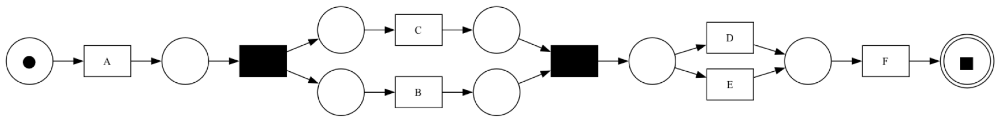

① Is it correct?
Toy logs, solved by hand first

11 / 11alignments
2 / 2planted rules
② Is it useful? Barely better than guessing
4 runs: trained on a random 75%, tested on the other 25%
Main finding: was the follow-up call paused more often than the model allows?
Correct on the toy logs · but only +0.008 F1 over guessing → a lead, not proof